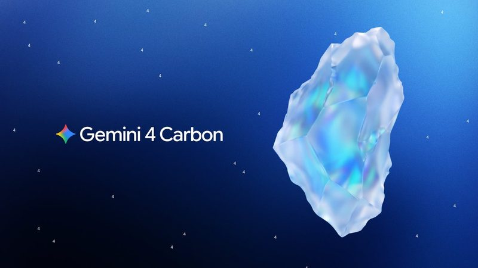

本期重點：Google 把最強模型 Gemini 4 Carbon 開放給開發者與 Ultra 訂閱用戶；Anthropic 更新上市文件，最高估值約 1.404 兆美元。另有 Claude 加入視訊會議、ChatGPT 推出商家專頁、Pixel 11 月更新支援繁中對話摘要、Spotify AI DJ 換聲音、紐約 AI 安全法開始登記，以及 Oura 收購 AI 醫療新創。

圖：Google新上線#1
Google 開放最強模型 Gemini 4 Carbon
Google 11 月 10 日宣布開放 Gemini 4 Carbon，定位是處理複雜程式、長時間代理任務與科學研究的頂級模型，兩週前先開放給資安防禦單位試用。API 售價與 Gemini 4 Argon 相同，每百萬輸入 tokens 2 美元、輸出 10 美元；Google AI Ultra 訂閱用戶可在 Gemini App、搜尋的 AI 模式與 Antigravity 使用。
Anthropic 11 月 10 日推出 Claude Meetings，可讓 Claude 以可見的與會者身分加入 Google Meet，一邊聽討論一邊起草計畫、畫時間軸、在聊天室回答問題，會後把筆記與待辦放進 claude.ai。同時推出 Claude Whiteboards 白板與 Claude Sheets 協作試算表。
💡 跟你有什麼關係：開會常見的會後整理可以交給 Claude 先做初稿；Claude 會在會議聊天室公告自己在場，有外部來賓加入時會自動離開。
⚠️ Claude Meetings 為測試版，只開放 Team 與 Enterprise 方案，先支援 Google Meet；找不到 Anthropic 官方公告頁，以 TechCrunch 報導為來源。
OpenAI 11 月 10 日推出測試版 Businesses in ChatGPT，商家可透過 Business Hub 認領自家資料、更新商品價格與庫存，並看到在 ChatGPT 被提及與點擊的統計。美國符合資格的電商與線上服務商家，還能建立 Business Agent，讓用戶直接和商家的 AI 對話詢問商品。